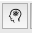

Window Elements Hide/Show
Buttons
The Hide/Show buttons for the Workbench Window
elements (Help
Window, Information
Window, Scenes
Window, Toolbar,
Overlay
Toolbox, and Features
Toolbox) are located in the upper right corner
of the Workbench Window. These buttons turn the display of these
elements on and off. The buttons are shaded gray (as in the images
below) to indicate that the element is on, and are unshaded when
the element is off.
 Help
Window button
Help
Window button
Information
Window button
 Identify Brainordinate button
 Scenes Window button
Scenes Window button
 Toolbar button
Toolbar button
 Overlay Toolbox button
Overlay Toolbox button
Features Toolbox
button